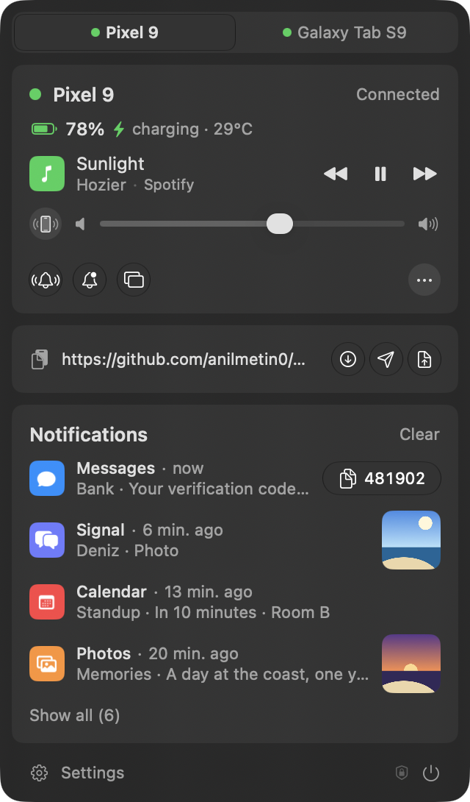
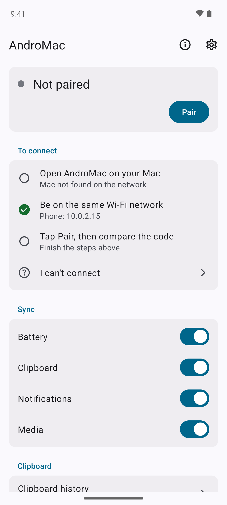
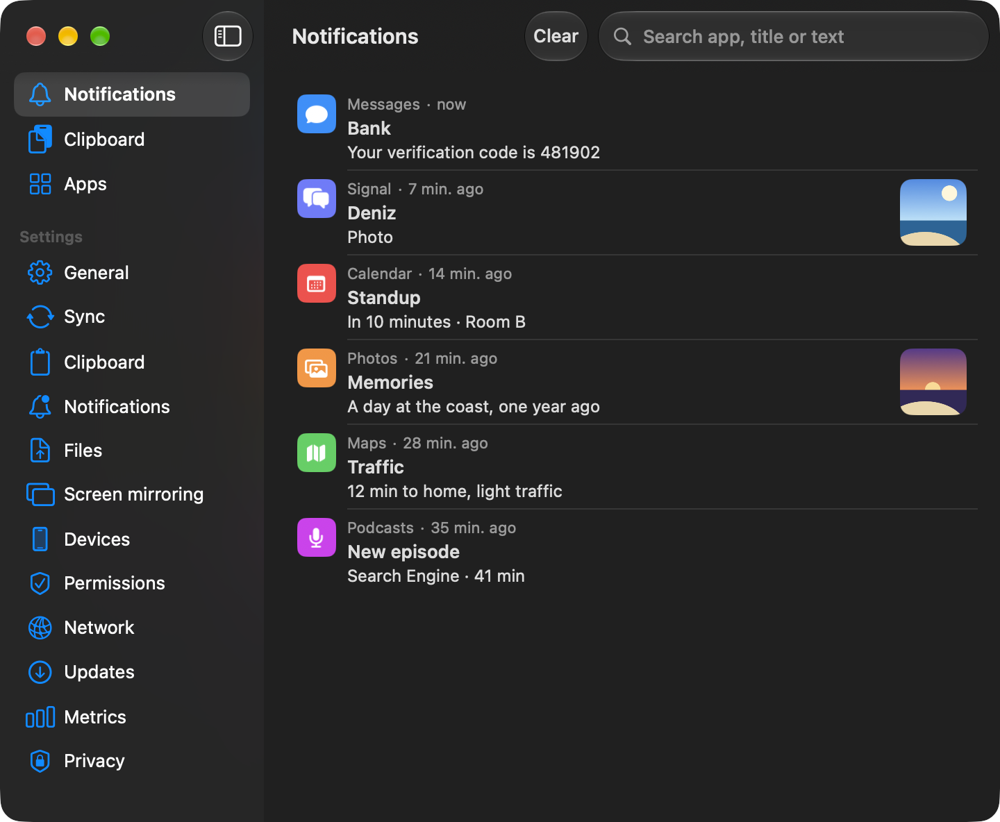
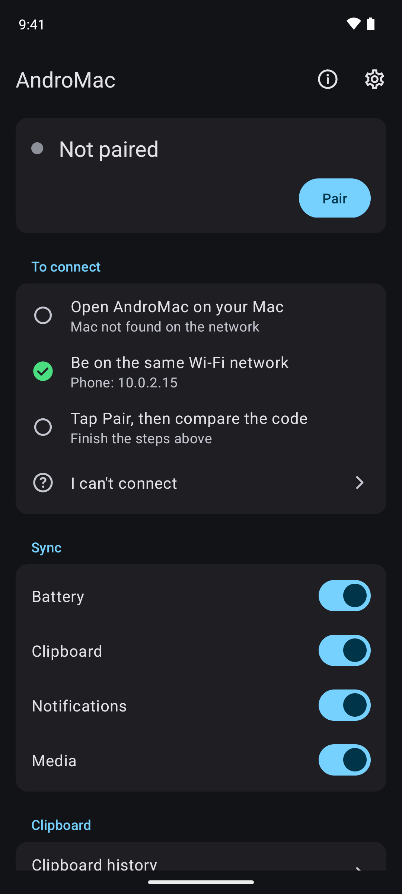
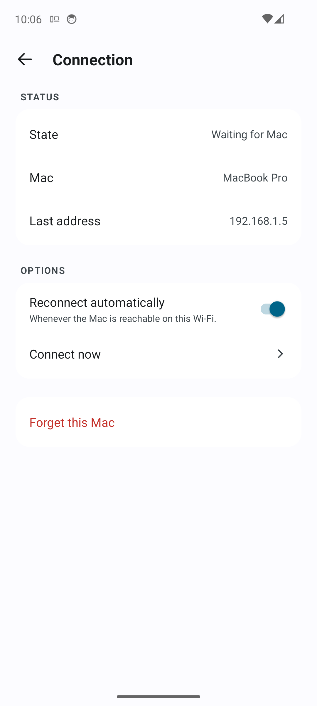
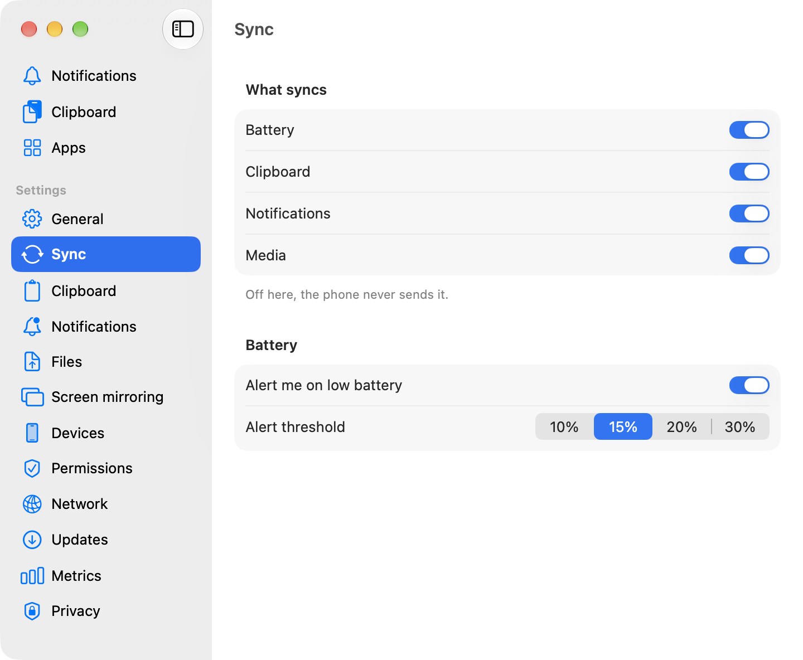
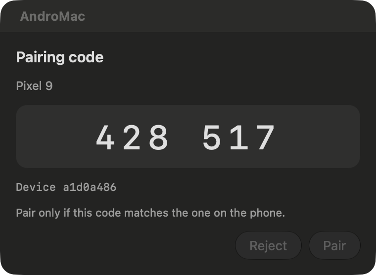
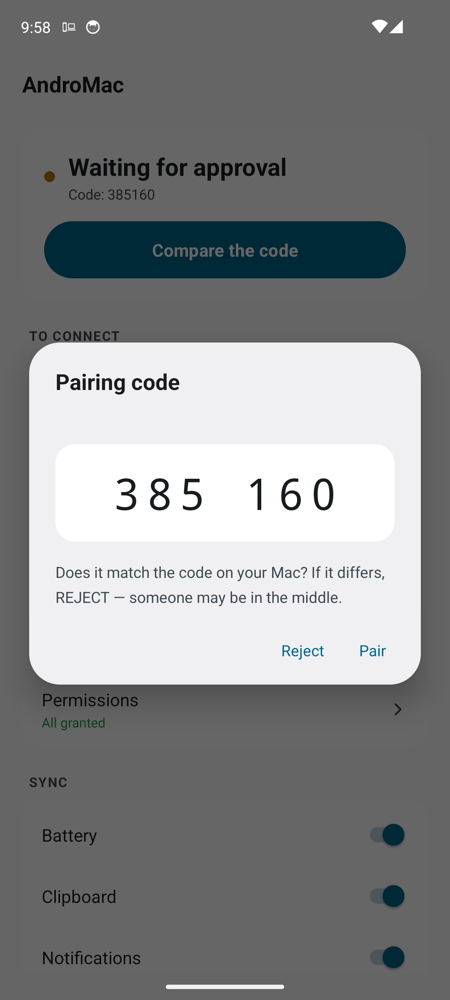

Your Android phone, on your Mac
A menu bar app on your Mac and a companion app on your Android phone. Notifications, clipboard, files, music and the phone's screen come to the Mac over Wi-Fi.
Mac with Apple silicon, macOS 14 or later. Android 10 or later.


Download
Mac
Apple silicon, macOS 14 or later
Install with Homebrew in Terminal:
brew tap anilmetin0/andromac https://github.com/anilmetin0/AndroMac brew trust anilmetin0/andromac brew install --cask andromac xattr -dr com.apple.quarantine /Applications/AndroMac.app
The app is not notarized, so the last line removes the quarantine flag macOS adds to downloads.
No Homebrew? Download the DMG
Android
Android 10 or later
- Scan the code with your phone's camera
- Open the downloaded APK
- Allow installs from your browser if Android asks
After this, the app updates itself. Android asks you to confirm each update.
Looking for nightly builds?
A nightly build is published after every change and named by its date and commit. It previews the next version, so expect rough edges. Once installed, the app follows the nightly builds on its own. Latest nightly:
Mac nightly
Install with Homebrew in Terminal:
brew tap anilmetin0/andromac https://github.com/anilmetin0/AndroMac brew trust anilmetin0/andromac brew install --cask andromac@nightly xattr -dr com.apple.quarantine /Applications/AndroMac.app
The two casks replace each other, so this also switches an existing install.
No Homebrew? Download the nightly DMG
Android nightly
- Scan the code with your phone's camera
- Open the downloaded APK
- Allow installs from your browser if Android asks
After this, the app updates itself. Android asks you to confirm each update.
What it does
Notifications
Phone notifications show up in Notification Center with the app icon, pictures and actions. Reply inline. One-time codes get a Copy code button.
Clipboard
Copy on one device, paste on the other. The Mac keeps a searchable history.
Battery
Battery level and charging state in the menu bar, with a warning when it runs low.
Media and sound
Play, pause and skip. Set the ringer and volume. Make a lost phone ring.
Files
Send files in both directions. Every transfer is checked with SHA-256.
Screen mirroring
Use the phone's screen with your mouse, keyboard and sound, through the bundled scrcpy.
Several phones
Pair more than one phone with a Mac. Each keeps its own settings.
Updates
The apps update themselves, through Homebrew if Homebrew installed them. Nightly builds are optional.
Local network
Works over your Wi-Fi without an account.
Inside the apps




Pairing
Open AndroMac on both
The Mac and the phone need to be on the same Wi-Fi.
Tap Pair on the phone
It finds the Mac on the same Wi-Fi.
Compare the code
Both screens show six digits. If they match, confirm on both.


Questions
How do I install it?
On the Mac, paste the four Homebrew lines into Terminal. Without Homebrew, open the DMG, drag AndroMac to Applications and run the xattr line.
On the phone, download the APK and allow installs from your browser when Android asks. Then open AndroMac on both and pair them.
macOS says AndroMac is damaged or can't be opened
The app is signed with its own certificate and is not notarized, so macOS blocks the first launch. Run this once in Terminal:
xattr -dr com.apple.quarantine /Applications/AndroMac.app
Or open the app, let macOS refuse it, then press Open Anyway in System Settings → Privacy & Security.
How do updates work?
Both apps check once a day and can install what they find. Settings → Updates on either side has the check switch, Install updates automatically and Nightly builds.
If Homebrew installed the Mac app, brew upgrade --cask andromac also moves it to the new version.
What does screen mirroring need?
Wireless debugging on the phone. Tap Build number seven times to unlock Developer options, then turn on Wireless debugging. A USB cable with USB debugging on works too.
The first time, press the mirror button in the Mac panel and type the code from Pair device with pairing code on the phone. Turn Wireless debugging off when you are done.
How do I remove AndroMac?
On the Mac, run brew uninstall --cask andromac, or drag the app to the Trash if you installed it from the DMG. On the phone, uninstall it like any other app.
More answers and troubleshooting are in the guide.